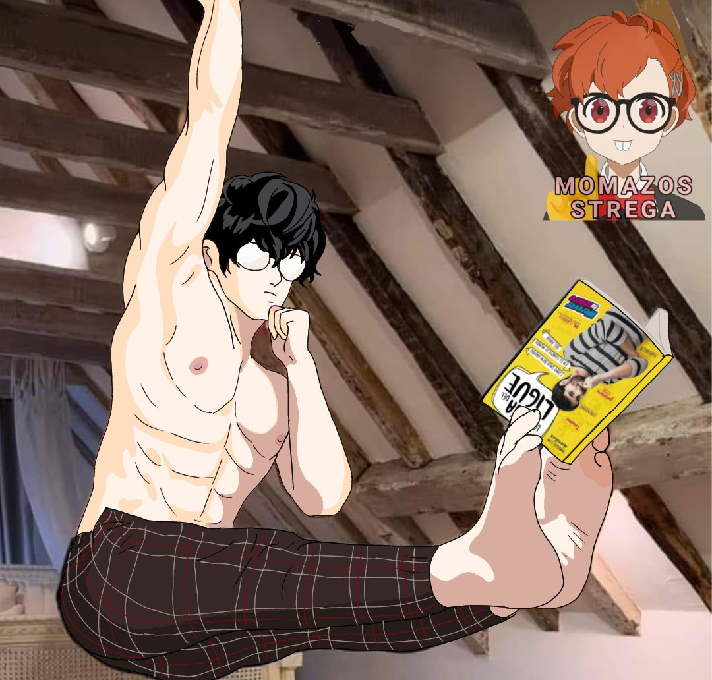
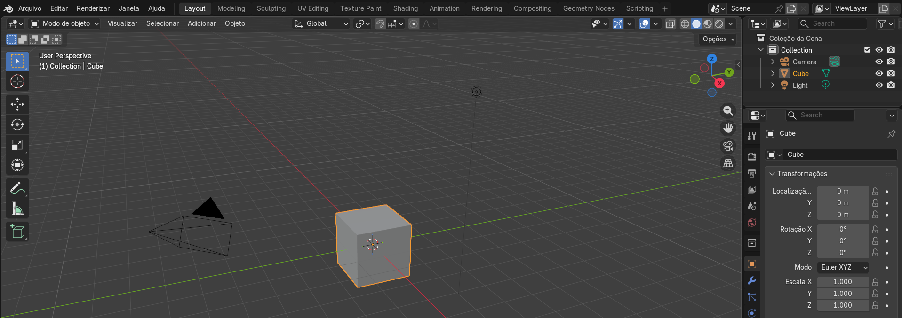

Passatempos
Não, eu não fico 24/7 fazendo atividades academicas e trabalhos. Não, eu também tenho as minhas formas de passar o tempo e me divertir.
Caso queira saber um pouco mais sobre isso, é só descer aqui!

Jogos, obvio
Já deixei bem claro em varias paginas que só um cara que curte jogar no tempo livre, tanto que tem 2 paginas dedicadas a isso!
Ver mais
Academia
Pra não ficar muito parado sentado numa cadeira e meio sendentario,pratico exercios regulamente. Sinceramente gosto de fazer isso pra me sentir um pouco mais saudavel, mesmo que a minha alimentação não seja tão saudável. Bom, de qualquer forma, ajuda.
Escrever
Eu adotei o habito de escrever ensaios e alguns artigos, com alguns projetos como o Versus 5 e ate o Blog. Português nunca foi o meu forte, mas minha ideias talvez sim.
Conheça!
Modelagem 3D
DE forma amadora? Com certeza, mas consigo criar coisas interessantes e legais com blender! SE quiser, não custar dar uma olhada, serio não é ruim!
Ver mais